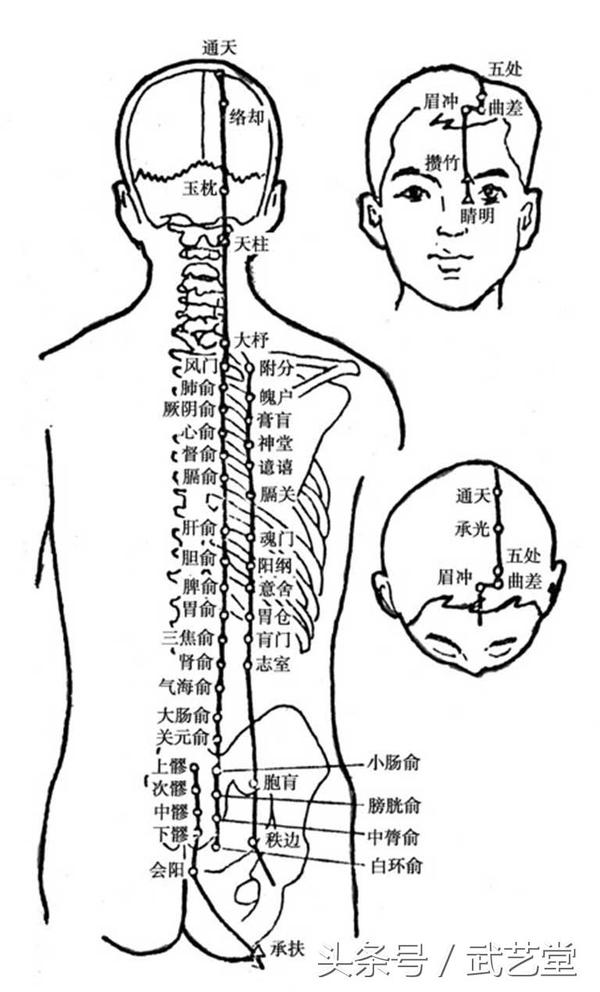
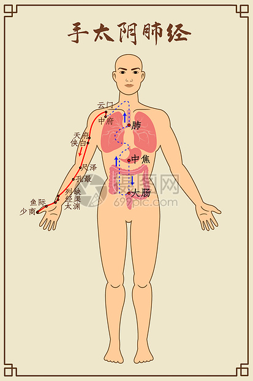
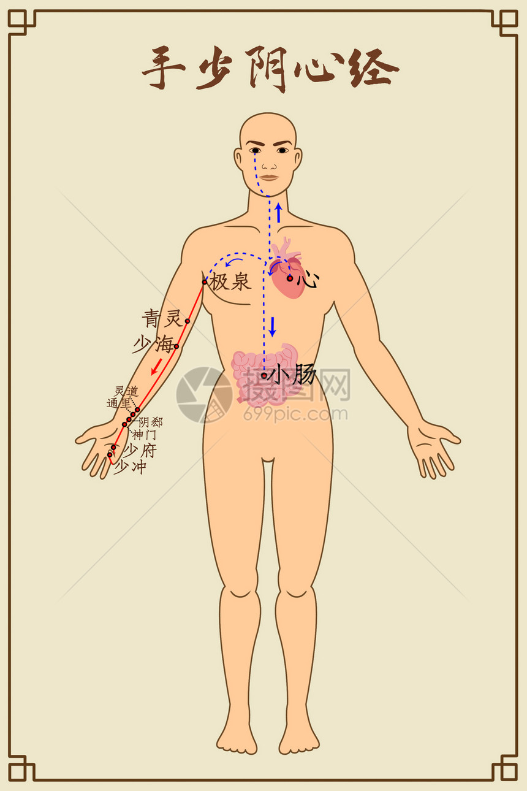

经络系统概述
经络是中医特有的生理系统，核心作用是运行气血、联络脏腑肢节、沟通内外上下，是人体机能调节的“网络通路”。
经络系统的核心构成: 十二经脉是主体，分为手足三阴经、手足三阳经，对应五脏六腑，左右对称分布，贯穿全身。 奇经八脉（督脉、任脉等）不直接连属脏腑，负责调节十二经脉气血，如督脉为“阳脉之海”，任脉为“阴脉之海”。 络脉是经脉的分支，包括十五别络、浮络、孙络，遍布体表和脏腑，实现气血的细微输布。 附属部分有经别（深入体腔联络脏腑）、经筋（附着筋骨肌肉，主运动）、皮部（经脉在体表的分布区域）。
经络的核心功能: 运行气血，为脏腑、组织、器官提供营养，维持生理活动。 联络沟通，将五脏六腑、四肢百骸、五官九窍、皮肉筋骨等联结成有机整体。 感应传导，传递病理信息（如脏腑病变反映于体表穴位）和治疗刺激（如针灸、按摩穴位调节脏腑）。 调节平衡，通过气血输布调节人体阴阳、虚实，维持内环境稳定。
经络的临床应用:诊断方面，通过穴位压痛、皮肤色泽变化等判断脏腑病变，如肝病可能在太冲穴出现压痛。治疗方面，针灸、推拿、艾灸等均以经络为依据，通过刺激穴位调节经络气血，如感冒针刺风池、列缺穴。养生方面，通过按摩经络循行部位、艾灸保健穴位（如足三里、关元），增强气血运行，预防疾病。

十二经脉

手太阴肺经
主管呼吸，通调水道

手少阴心经
主血脉，藏神志
足厥阴肝经
主疏泄，调节气机
经络养生
经络保健
经络养生是中医养生保健的重要组成部分，通过各种方法疏通经络，促进气血运行，达到防病治病、强身健体的目的。